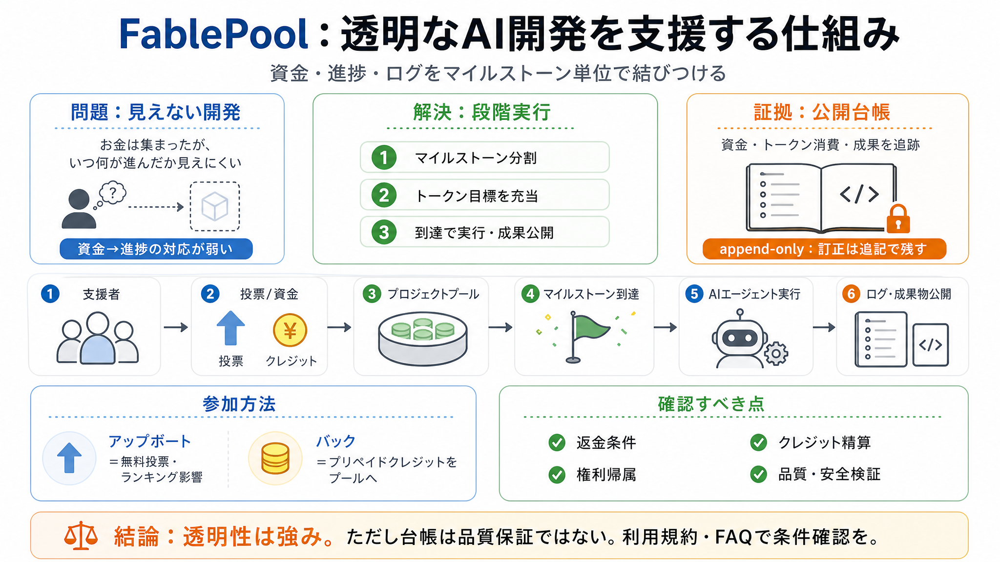

pool money behind a big prompt, an AI attempts the build - FablePool
# Pool money behind a big prompt. An AI *attempts* the build, in public. Strangers chip in to fund one ambitious instruc…

FablePoolは、AIエージェントが“実装して成果を公開する”ことを前提に、資金・進捗・ログをマイルストーン単位で結びつける仕組みです。
クラウド調達では「お金は集まったが、いつ何が進んだか」が伝わりにくいことがあります。FablePoolはそのギャップを、実行と成果を公開し“監査可能”にすることで埋めます。
よくある不透明
資金 → 進捗の対応が弱い
狙い
成果までの道筋を可視化
発想はKickstarterに近く、違いは“AIエージェントが段階的に実作業を進め、ログや成果物を公開する”点です。支援は「目に見えるマイルストーン」に紐づきます（日本語：進捗段階＝マイルストーン）
クラウド調達
Kickstarter的
実行主体
AIエージェント
対応
ログ/成果を公開
支援者はアップボート（投票）でプロジェクトを後押しし、資金はプリペイドクレジットを購入して“プロジェクトのプール”に充当します。プールがマイルストーン目標（トークン換算のコスト）に到達するとAIがその段階を実行します。
アップボート
無料／ランキング影響
バック（資金）
プリペイドクレジット → プールへ
巨大な目標を分割し、各段階のコスト見積もり（トークン）を満たしたときだけ実行します。支援者は「いつ、何に進んだか」を追いやすくなります。
i マイルストーン分割
段階ごとに“完成”を定義
ii トークン目標
コスト見積もりを充当
iii 到達で実行
成果物を公開
各プロジェクトは公開の二重記帳台帳（ダブルエントリー）を維持し、訂正は“書き換え”ではなく“新しい追記行”で残します。追記型（append-only）にすることで、改ざんや恣意的な履歴の書き換えを抑え、監査可能性を高めます。
追跡できるもの
資金（イン）／トークン消費／成果（アウト）
訂正の扱い
既存行の編集ではなく追記
アップボートは無料で、ランキングに影響します。一方、資金が動くのはバック（クレジットでプールへ充当）の方です。
アップボート（投票）
無料／軽い参加
バック（支援）
プリペイドクレジットでプールへ
マイルストーンが停滞すると支出を止め、未消化分はプールに残る設計が示されています。なお、返金の可否や条件はこの抜粋だけでは確定できません。
示されている点
停止：マイルストーン未達なら支出が止まる
未確定
返金：FAQ/利用規約で要確認
少なくとも一部の成果物はMITライセンスでオープンソースとして公開されると明記されています。プロジェクトによって公開範囲（例：ダウンロード制限）が異なり得ます。
ライセンス
MIT（例として明示）
公開の差
ログ/金銭の流れは非公開にしない旨（ただし詳細は要確認）
透明性志向の設計は評価できる一方で、返金条件・権利帰属・クレジット精算・停止時の扱いなどが抜粋内では確定的に示されていません。支援者は一次情報（利用規約/FAQ続き）を読む必要があります。
返金（失敗）
可否/条件が未明示
権利（成果物）
所有者・侵害対応は未確定
クレジット
換金・失効・精算条件は要確認
公開台帳とログは“説明可能性”を上げますが、品質や安全性を保証するメカニズムはこの抜粋だけでは見えません。コードがMITでも、生成物の信頼性・セキュリティ検証は別の評価が必要です。
技術
見積もり精度／完成定義が鍵
セキュリティ
脆弱性検証体制が不明
法的
権利侵害・学習データ由来等は要確認
FablePoolは「公開型で説明可能なAI開発」という方向性が有望です。一方で、返金・権利・クレジット・品質検証の条件は別途確かめ、過度な保証を前提にしない姿勢が重要です。
強み
マイルストーン支出＋追記型台帳で監査しやすい
次に読むべき
利用規約／FAQ（返金、権利帰属、停止時、クレジット精算）
# Pool money behind a big prompt. An AI *attempts* the build, in public. Strangers chip in to fund one ambitious instruc…
And that's why I think 2026 is the year C-suite leaders need to get a lot more serious about token budgets, token econom…
# A CFO's Five-Layer Framework To Govern AI Token Spend Before It Governs You. Expertise from Forbes Councils members, o…
An opinionated guide to today's technology landscape. The business execs' A-Z guide to technology. In-depth insights to …
# Corporate Finance Chiefs Grapple with Unpredictable Token Bills as AI Costs Skyrocket: Survey. Corporate finance chief…